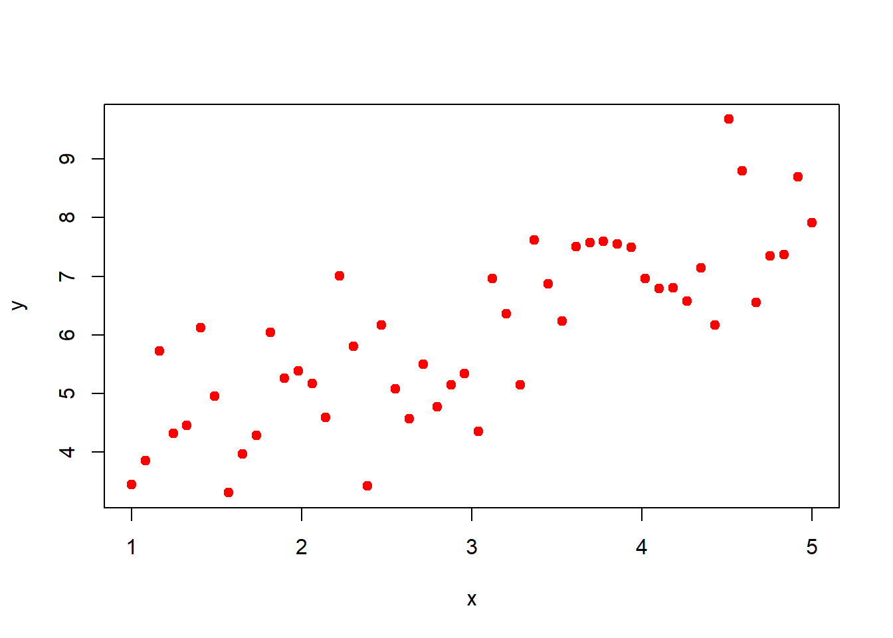

3Bayesian Estimation for Linear Regression Problem
Regression models are commonly used in solving real life data analysis problems. Several statistical softwares are now available that provide posterior distributions of the regression coefficients and allows various choice of the prior distributions. In this document, we shall focus on the detailing of the regression models under a Bayesian setting. we are hoping that this will be helpful for the students to understand the concept better rather than blindly believing the output of softwares. We start our discussion with the most simplest setting Simple Linear Regression. In the next chapter, we shall discuss the Bayesian inference for nonlinear models.
We have linear regression model; \[y_i = \beta_0 + \beta_1x_i + \epsilon_i, \text{where}~ \epsilon_i \stackrel{\small{\mbox{iid}}}{\sim} \mathcal{N}(0,\phi),\] and suppose we observe the data \((y_i,x_i)\), \(i \in \left\lbrace1,2,\cdots,n\right\rbrace\), then our model for \(y\) is:
Our primary goal is to make inference about the parameters \(\beta_0\) and \(\beta_1\). If we consider normal priors on the coefficients and an inverse gamma prior on the variance term, then full Bayesian model for this data can be written as,
where \(\mu_0\), \(\tau_0\), \(\mu_1\), \(\tau_1\), \(\alpha\), \(\gamma\) all are hyper-parameters and we assume that they are known. Let \(y_1,y_2,\cdots,y_n\) are observed data of size \(n\) from a population having normal distribution with mean \(\beta_0+\beta_1x_i\) and variance \(\phi\), where \(\beta_0\), \(\beta_1\) and \(\phi\) are unknown. Our goal is to draw inference about \(\beta_0\), \(\beta_1\) and \(\phi\). Therefore, joint posterior distribution of \(\beta_0\), \(\beta_1\) and \(\phi\) can be written as,
and let \(K = \int_{\beta_0}\int_{\beta_1}\int_{\phi}f(y,\beta_0,\beta_1,\phi)\mathrm{d}\beta_0 \mathrm{d}\beta_1 \mathrm{d}\phi\), this integration is difficult to compute. We know that
From the joint posterior distribution we can not generate random sample because it does not follow any common known distribution. So, we generate random sample from conditional posterior distribution of each parameter. In the following, we calculate the conditional posterior distribution of each parameter. Using the relation
Like the joint posterior, the conditional posterior is also proportional to the product of the likelihood and prior of the parameter of interest. The computation yields the similar expression for \(\beta_1\) as given below;
The prior specification for \(\phi\) is given by the inverse gamma density \(\mathcal{IG}(\mbox{shape} = \alpha, \mbox{rate} = \gamma)\) function which is given as follows,
Comparing the conditional posterior of \(\phi\) with equation \(\eqref{eq:IG_prior}\), we can see that \(f(\phi|\beta_0, \beta_1, y)\) yields the inverse gamma distribution with the parameter values as, shape = \(\alpha + \frac{n}{2}\) and rate = \(\frac{1}{2} \sum_{i=1}^{n}\left(y_i-\beta_0-\beta_1x_i\right)^2 + \gamma\).
Our goal is to draw inference about the population parameters \(\beta_0\), \(\beta_1\) and \(\phi\). To compute the posterior credible interval for the parameters, we require to draw samples from the joint posterior distribution of \(\beta_0\), \(\beta_1\) and \(\phi\) i.e \(f(\beta_0, \beta_1,\phi)\). A posterior credible interval is a range of values within which an unknown parameter lies with a certain probability, based on the posterior distribution in Bayesian inference. It represents the uncertainty around the estimated parameter after incorporating the observed data and prior beliefs. We observe that \(f(\beta_0, \beta_1,\phi)\) does not follow any common known distribution from which it easier to draw the samples. So, we utilize the Gibbs sampling method, in which, random samples are drawn from the conditional posterior distribution. So we compute the posterior distribution of \(\beta_0\), conditional on \(\beta_1\) and \(\phi\) (Eq. \(\ref{eq:cond_post_beta0}\)). Similarly conditional posterior distribution for \(\beta_1\) and \(\phi\) are evaluated. We evaluated the conditional posterior \(f(\beta_0|\beta_1, \phi)\) and \(f(\beta_1|\beta_0, \phi)\) by assuming normal priors from \(\beta_0\) and \(\beta_1\) and inverse gamma prior for \(\phi\). The calculation suggested that \(f(\beta_0|\beta_1, \phi)\) and \(f(\beta_1|\beta_0, \phi)\) does not follow any common distribution. However, conditional posterior distribution of \(\phi\) belongs to the family of inverse gamma distribution (Eq. \(\ref{eq:cond_post_phi}\)). This is due to the conjugacy relationship between normal distribution and inverse gamma distribution with respect to the parameter representing the variance. We utilized grid approximation method for generating samples from the conditional posterior of \(\beta_0\) and \(\beta_1\). For generating samples from the posterior of \(\phi\) we used direction simulation from the inverse gamma distribution using \(\texttt{invgamma}\) package (Kahle and Stamey 2017) from \(\texttt{R}\) software for statistical computing. However, this can also be carried out by using probability integral transform.
Note
If \(X_1, X_2, \cdots, X_n\) be a random sample of size \(n\) from a population following \(\mathcal{N}(\theta,\sigma^2)\). If \(S^2\) is the sample variance based on a sample of size \(n\) from a normal population, we know that \(\frac{(n-1)S^2}{\sigma^2}\) has a \(\chi^2_{n-1}\) distribution. The conjugate prior for \(\sigma^2\) is the inverse gamma probability density \(\mathcal{IG}(\alpha,\beta)\). Then the posterior distribution of \(\sigma^2\) is, \(\mathcal{IG}\left(\alpha + \frac{n-1}{2},\left[\frac{(n-1)S^2}{2} + \frac{1}{\beta}\right]^{-1}\right).\)
In grid approximation method, we first define grid for estimating the posterior. After that at every grid point we compute the likelihood and prior. By multiplying likelihood and prior we get unstandardized posterior values at each grid point. Dividing each value by sum of all values we get the standardized posterior values. This discrete distribution is then used to simulate realization from exact posterior distribution. From all grid point we randomly select one grid point according to their probability. This process is executed by using \(\texttt{sample()}\) function available in \(\texttt{R}\). We simulate this process for long time. After the sampling is done, we get a chain of simulated values from the posterior distribution. Since, it is a Markov chain, the sample values autocorrelated. To obtain independent observations we used thinning by taking every sixteen observation after the burn-in period. However, the choice should be decided by investigating the autocorrelation plot of the chain.
At this point, it is nice to have an idea on Gibbs sampling method. Suppose we have joint probability distribution of parameters (not necessarily in known form), we want to generate random sample from marginal probability distribution of each parameter. Then we use Gibbs sampling method. In Gibbs sampling method, we generate values from the conditional distribution, but we want values from marginal probability(unconditional) distribution. The values which we get from conditional probability distribution of each parameter, after certain burn-in period acts as a realization from the true marginal probability distribution of respective parameters. In the current context on Bayesian linear regression, we want to simulate observations from the \(f(\beta_0,\beta_1,\phi |y)\). Since, it is difficult to simulate from the joint distribution, we simulate from the conditional posterior distribution \(f(\beta_0|\beta_1, \phi, y)\).
3.1 Simulation study
For checking purpose using simulation, we have fixed population parameters of a linear regression model as \(\beta_0\) = 3, \(\beta_1\) = 1 and \(\phi\) = \(1\). Since we do not have the real data in our hand, so we created artificial data using following model with these fixed values of parameters (Figure fig-simulated_data),
We have prior for \(\beta_0\) and \(\beta_1\) is Normal distribution with mean(\(\mu_0\)), variance(\(\tau_0\)) and mean(\(\mu_1\)), variance(\(\tau_1)\), respectively. Parameter \(\phi\) have prior following the inverse gamma distribution with shape(\(\alpha\)) and rate(\(\gamma\)). The hyper parameters \(\mu_0\), \(\tau_0\), \(\mu_1\), \(\tau_1\), \(\alpha\), \(\gamma\) are assumed to be known. After that we computed the conditional posterior distribution of \(\beta_0\), \(\beta_1\) and \(\phi\) assuming the above priors. Conditional posterior of \(f(\beta_0|\beta_1,\phi)\) and \(f(\beta_1|\beta_0,\phi)\) do not follow any common know distributions. So we have used grid approximation method for generating samples from the conditional posterior of \(\beta_0\) and \(\beta_1\). From this process we get the unstandardized posterior values at the grid points, then we standardized this values by dividing the sum of all unstandardized posterior values. We randomly select one grid sample and we iterate this process for 100000 times but we consider starting 70000 random sample as burn-in period and after a burn-in period. we want the independent random sample, to obtain independent sample we used thinning by taking every sixteen sample after the burn-in period in posterior of \(\beta_0\) and \(\beta_1\). In posterior of \(\phi\) we used thinning by taking every third sample after the burn-in period. However, the choice is good should be decided by plotting \(\texttt{ACF}\) of after thinning sample. After checking autocorrelation of thinning simulated sample, we draw histogram of \(\beta_0\), \(\beta_1\) and \(\phi\). Histogram of conditional posterior distribution of \(\beta_0\) and \(\beta_1\) of normal distribution and conditional posterior distribution of \(\phi\) is inverse gamma distribution approximated using the posterior means of \(\beta_0\) and \(\beta_1\). Population parameters are fall within the credible interval of posterior distribution \(\beta_0\), \(\beta_1\) and \(\phi\). In developing the Gibbs sampling algorithm for Bayesian regression, we have used the inbuilt function \(\texttt{rnorm}\) and \(\texttt{rinvgamma}\) from \(\texttt{R}\) base and \(\texttt{invgamma}\) package respectively. However by virtue of the probability integral transform both of them can be simulated from uniform random number.
beta_0 =3# population interceptbeta_1 =1# population slopephi =1# population error variancex =seq(1, 5, length.out =50) # fixation of the population parameterset.seed(123) # we fixing a randomness in outputy = beta_0 + beta_1 * x +rnorm(length(x), 0, sqrt(phi))data =data.frame(y, x) # data containing population sizeplot(x,y, col ="red", pch =19)

Figure 3.1: Plot of simulated data for the study of linear regression generated using the model \(y_i = \beta_0 + \beta_1 x_i + \mathcal{N}(\mbox{mean} = 0, ~\mbox{sd} =\sqrt{\phi}), i \in \{1,2,\cdots,n\}\). The parameters values are fixed as \(\beta_0 = 3,~\beta_1 = 1,~\phi = 1\), and generated data of length \(n=50\).
In the above code the population parameters have been fixed for simulation purpose. The parameters are set as \(\beta_0 = 3\), \(\beta_1 = 1\) and \(\phi = 1\). The seed has been fixed so that the results can be reproduced later as well. The reader is encouraged to run the complete code step by step rather than running it completely in a single step. In the following section, we specify the prior distribution for the model parameters.
# Prior for beta_0mu_0 =2; tau_0 =0.4# prior parameterprior_beta_0 =function(x){ # function for prior beta_1dnorm(x, mean = mu_0, sd =sqrt(tau_0))}# Prior for beta_1mu_1 =2; tau_1 =0.5# prior parameterprior_beta_1 =function(x){ # function for prior beta_1dnorm(x, mean = mu_1, sd =sqrt(tau_1))}# Prior for phi. library(invgamma) #alpha =2; gamma =2# prior parametersprior_phi =function(x){ # function for prior phidinvgamma(x, shape = alpha, rate = gamma)}
The following code describes the likelihood function. Recall that to compute the posterior we have to multiply the likelihood function with the prior distribution. So, here we write separate function for the likelihood function. The likelihood function is the joint distribution of the data values where the parameters are considered as variable. Also, note that the function directly compute the log-likelihood; this is is helpful to avoid truncation errors made by the software.
likelihood =function(data, params){ # likelihood function of data given parameters y = data[,1] x = data[,2] n =nrow(data) beta_0 = params[1] beta_1 = params[2] phi = params[3] log_lik =-n*log(sqrt(2*pi)) - (n/2)*log(phi) -sum((y - beta_0-beta_1*x)^2)/(2*phi)# log-likelihood of data given parametersreturn(exp(log_lik))}
The following codes are self explanatory. Sufficient comments have been included. Note that we have created the grid values by dividing an interval with a step size of 0.01. Choice of this interval plays critical role for a successful grid approximation. This interval is essentially act as a support for the posterior distribution of the designated parameter. The simulation would start with an initial choice of the parameters \(\beta_0^{(0)}\), \(\beta_1^{(0)}\) and \(\phi^{(0)}\) which have been simulated from the prior distribution.
# storage for posterior samplesiteration =100000# number of iterationspost_beta_0 =rep(NA, iteration) # storage for posterior of beta_0post_beta_1 =rep(NA, iteration) # storage for posterior of beta_1post_phi =rep(NA, iteration) # storage for posterior of phi# Specification of gridsstep =0.01# grid stepgrid_beta_0 =seq(from =-5, to =10, by = step) # fixation of the grid of beta_0grid_beta_1 =seq(from =-5, to =5, by = step) # fixation of the grid of beta_1# Initialization of the posterior samplespost_beta_0[1] =rnorm(1, mean = mu_0, sd =sqrt(tau_0)) # posterior beta_0post_beta_1[1] =rnorm(1, mean = mu_1, sd =sqrt(tau_1)) # posterior beta_1post_phi[1] =rinvgamma(n =1, shape = alpha, rate = gamma)# posterior phi
The following codes give the code for Gibbs sampling method to generate the posterior distribution from the marginal posterior distribution. In the text, it has been mentioned that we do not have idea about the joint posterior distribution of the parameters, so we simulate from the marginal posterior distribution. Since, the exact functional form of the marginal posterior is also not known, we approximate it by using grid approximation.
Trace plots are useful tools to convergence of the chains which are expected to converge the posterior distribution. After an initial burn in period, the values would act as samples from the target (desired posterior) distribution. In the following we have considered first 70% of the simulated values as the burn in step. There is no hard and fast rule for it.
# Trace plotspar(mfrow =c(2,2))# trace plot of posterior of beta_0plot(post_beta_0, type ="l", main =bquote("Trace plot of"~ beta[0]),col ="red")# trace plot of posterior of beta_1plot(post_beta_1, type ="l", main =bquote("Trace plot of"~ beta[1]),col ="red")# trace plot of posterior of phiplot(post_phi, type ="l", main =bquote("Trace plot of"~ phi),col ="red")
It is important to note that simulation of \(\beta_0^{(j)}\) depends on the value of \(\beta_0^{(j-1)}\). Similarly for other parameters as well. Thus, the posterior values are identically distributed (after a sufficiently large step) but not independent. So, the test for autocorrelation has been performed as the values have been selected accordingly. For example, we may consider every 10th values after the burn in period. This is also known as thinning. The function \(\texttt{acf()}\) has been utilized for this purpose.
# Plot of conditional posterior density functions of beta_0, beta_1, phicut =0.7# for cutting starting 70% samplepar(mfrow =c(2,3))# Section for plot acf of posterior beta_0u = post_beta_0[ceiling(iteration*cut):iteration] # after burn-in periodindex =seq(1,length(u), by =16) # thiningpost_beta_b0_thinning = u[index] # values after thinningacf(post_beta_b0_thinning,main =bquote("acf of posterior "~beta[0])) #checking autocorrelation# Section for plot acf of posterior beta_1u = post_beta_1[ceiling(iteration*cut):iteration] # after burn-in periodindex =seq(1,length(u), by =16) # thinningpost_beta_b1_thinning = u[index] # values after thinnigacf(post_beta_b1_thinning,main =bquote("acf of posterior "~beta[1]))# checking autocorrelation# Section for plot acf of posterior phiu = post_phi[ceiling(iteration*cut):iteration] # after burn-in periodindex =seq(1,length(u), by =3) # thinningpost_phi_thinning = u[index] # values after thinningacf(post_phi_thinning,main =bquote("acf of posterior "~phi)) # checking autocorrelation
After the thinning has been done, we visualize the approximated distribution by means of histogram. As we can see that the posterior density of \(\beta_0\) and \(\beta_1\) can be well approximated by the normal distribution. The posterior density of \(\phi\) is positively skewed and can be well approximated by the inverted gamma density function. This is due to conjugacy which has been mentioned earlier. The exact posterior density for \(\phi\) has been computed using the mean of the posterior samples of \(\beta_0\) and \(\beta_1\).
# Section for plot histogram of posterior beta_0 after thinninghist(post_beta_b0_thinning, probability =TRUE, main =bquote(" Posterior of "~ beta[0]),xlab =expression(beta[0]),col ="grey")credible_interval_beta_0 =quantile(post_beta_b0_thinning, c(2.5, 97.5)/100)abline(v = credible_interval_beta_0,col ="blue",lwd =2)legend("topright",legend ="Credible Interval",lwd =2,col ="blue",lty =2,cex =0.5)# Section for plot histogram of posterior beta_1 after thinninghist(post_beta_b1_thinning,probability =TRUE,main =bquote("Posterior of "~beta[1]),col ="grey",xlab =expression(beta[1]))credible_interval_beta_1 =quantile(post_beta_b1_thinning, c(2.5, 97.5)/100)abline(v = credible_interval_beta_1, col ="blue", lwd =2)legend("topright",legend ="Credible Interval",lwd =2,col ="blue",lty =2,cex =0.5)# Section for plot histogram of posterior phi after thinninghist(post_phi_thinning, probability =TRUE,main =bquote("psterior of "~ phi),col ="grey",ylim =c(0,3), xlab =expression(phi))credible_interval_phi =quantile(post_phi_thinning, c(2.5, 97.5)/100)abline(v=credible_interval_phi,col ="blue",lwd =2)legend("topright",legend =c("Credible Interval","True curve of phi"),lwd =c(2,2), col =c("blue","red"), lty =2, cex =0.5)# Approximating the posterior distribution of phi using the posterior means of beta_0 and beta_1mean_post_beta_0 =mean(post_beta_b0_thinning)mean_post_beta_1 =mean(post_beta_b1_thinning)shape = alpha +nrow(data)/2rate = (1/2)*sum((y - mean_post_beta_0 - mean_post_beta_1*x)^2) + gammacurve(dinvgamma(x, shape = shape, rate = rate),add =TRUE, lwd=2, col ="red")
Figure 3.2: Trace plot of posterior \(\beta_0\), \(\beta_1\) and \(\phi\).
Up to this point, we have developed a clear understanding of linear regression from scratch under the Bayesian framework and demonstrated it on simulated data for better comprehension. The Bayesian estimation of the linear regression parameters has been conducted using custom-written code, without relying on any R packages. This approach provides a transparent view of the underlying processes. Once the mechanism is well understood, the same analysis can be performed using built-in packages. Some of the packages available in R for Bayesian linear regression are \(\texttt{rstanarm}\)(Goodrich et al. 2024), and \(\texttt{brms}\)(Bürkner 2017). The \(\texttt{rstanarm}\) package provides a user-friendly interface to fit Bayesian models using Stan, while \(\texttt{brms}\) extends this by allowing complex model structures using formula syntax.
Bürkner, Paul-Christian. 2017. “brms: An R Package for Bayesian Multilevel Models Using Stan.”Journal of Statistical Software 80 (1): 1–28. https://doi.org/10.18637/jss.v080.i01.
Goodrich, Ben, Jonah Gabry, Imad Ali, and Sam Brilleman. 2024. “Rstanarm: Bayesian Applied Regression Modeling via Stan.”https://mc-stan.org/rstanarm/.

![The top panel depicts the autocorrelation function plot of posterior samples for \beta_0, \beta_1 and \phi. The function \texttt{acf} was used for this purpose. The bottom panel depicts the histograms of posterior values of \beta_0, \beta_1 and \phi. Blue lines indicate the credible interval and the red line is approximation of the conditional posterior distribution of \phi, f(\phi|\hat{\beta_0}, \hat{\beta_1},y), where \hat{\beta_0} and \hat{\beta_1} are the posterior means of \beta_0 and \beta_1, respectively.](./Chapter 3_Bayesian Estimation for Linear Regression Problem_Figures/Linear_Bayesian.png) Up to this point, we have developed a clear understanding of linear regression from scratch under the Bayesian framework and demonstrated it on simulated data for better comprehension. The Bayesian estimation of the linear regression parameters has been conducted using custom-written code, without relying on any R packages. This approach provides a transparent view of the underlying processes. Once the mechanism is well understood, the same analysis can be performed using built-in packages. Some of the packages available in R for Bayesian linear regression are
Up to this point, we have developed a clear understanding of linear regression from scratch under the Bayesian framework and demonstrated it on simulated data for better comprehension. The Bayesian estimation of the linear regression parameters has been conducted using custom-written code, without relying on any R packages. This approach provides a transparent view of the underlying processes. Once the mechanism is well understood, the same analysis can be performed using built-in packages. Some of the packages available in R for Bayesian linear regression are